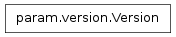

A simple approach to versioning that replaces the need to manually maintain __version__ strings without requiring larger, more complex solutions (e.g. versioneer.py).
It is easy to forget to update __version__ strings when releasing a project and it is important that the __version__ strings are useful over the course of development, especially if releases are infrequent.
The Version class is designed to solve these problems, acting like a simple version string for released versions while making additional information accessible when working with version control during development. Currently only git is supported, but other version control systems could be added easily. Here is a typical example of how it is used in the __init__.py file of a package:
__version__ = param.Version(release=(1,0), fpath=__file__)
The Version class assumes that you will tag the release in your version control system with a string in the form v*.* before the release is made, e.g. v1.0 or v2.6.3. If you add a call to the Version.verify in your setup.py script, you will be reminded to create this tag (if it has been forgotten) and the declared version in setup.py will be checked for consistency with this tag.
Bases: object
A simple, approach to Python package versioning that supports PyPI releases and additional information when working with git version control. When obtaining from PyPI, the version returned is the a string-formatted rendering of the supplied release tuple. Any number of items can be supplied in the tuple, with either two or three versioning levels typical.
During development, git describe will be used to compute the number of commits since the last version tag and the short commit hash, and to determine if the commit is dirty (has changes not yet committed). Version tags must start with a lowercase ‘v’ and have a period in them, e.g. v2.0, v0.9.8, v0.1a, v0.2beta, etc.
Note that when git is used, the comparison operators take into account the number of commits since the last version tag. This approach is often useful in practice to decide which version is newer, but will not be reliable when comparing against a different fork or branch in a distributed version control system.
If you want version control information available even in an exported git archive (e.g. a .zip file from GitHub), you can set the following line in the .gitattributes file of your project:
__init__.py export-subst